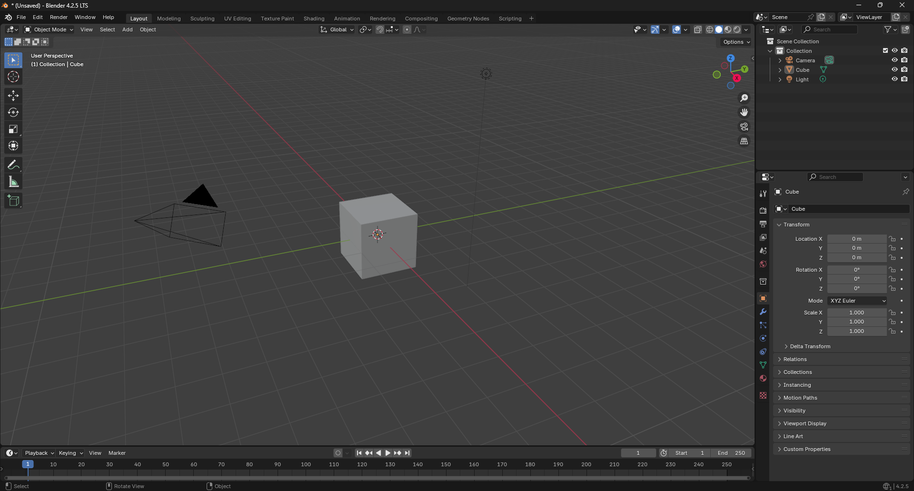

This guide will help you learn the basics of converting MMD models (.pmx) into VRM models.
Open Blender and delete the default cube. This is an important step!
Open Unity Hub and create (or open) a project using an appropriate template.
These features add realism to your model.